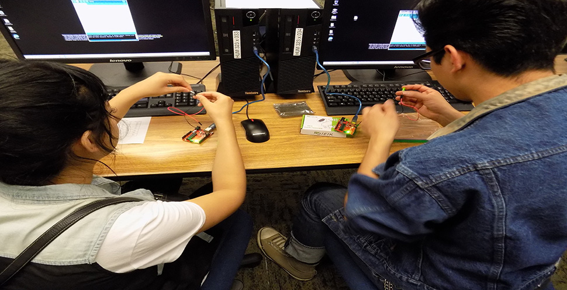

<div id="single-portfolio">
	<div id="portfolio-details" class="container">
		<a class="close-folio-item" href="#"><i class="fa fa-times"></i></a>
		
		<div class="row">
			<div class="col-sm-9">
				<div class="project-info">
					<h3>Robotics Workshops</h3>
					<p>The workshops are designed to introduce attendees to robotics by holding a brief lecture about basic robotics concepts and allowing them to participate in a hands-on demonstration.</p>
					<p>In a previous workshop, the activities that participants completed were the Hour of Code, a nationwide initiative to introduce millions of students to one hour of computer science and computer programming, and the "Hello, World!" of physical computing which is programming an Arduino, a widely used microcontroller, using its IDE to get an LED light to flash and demonstrate how you can program it to flash every second or every minute.</p>
				</div>
			</div>
			<div class="col-sm-3" style="padding-left:15px;padding-right:15px;">
				<div class="project-details">
					<h3>Event Details</h3>
					<p>For: MVC Students</p>
					<p>Date: 24 Sep 2015</p>
					<p>Tag: Computer Science, Robotics, Workshops, Events</p>
				</div>  
			</div>
		</div>
	</div>
</div>